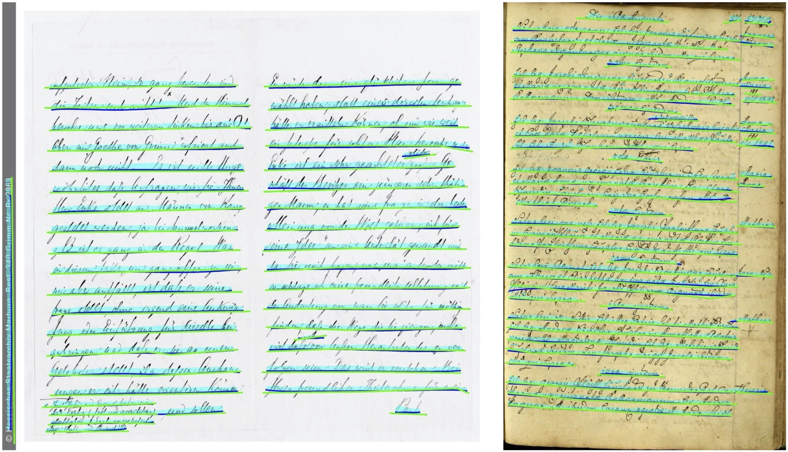
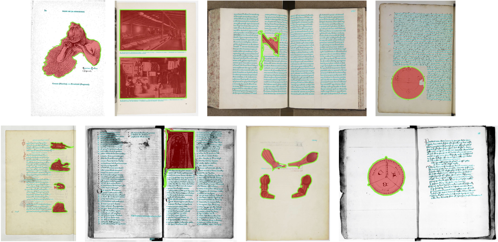
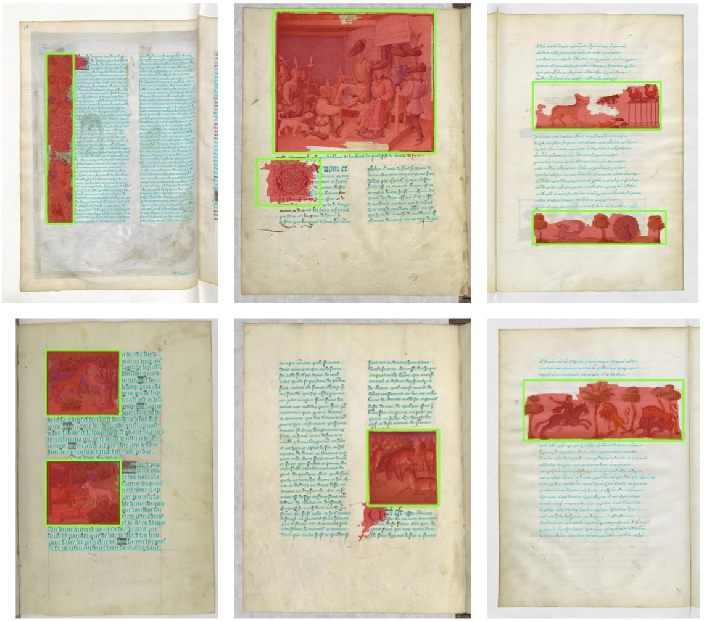
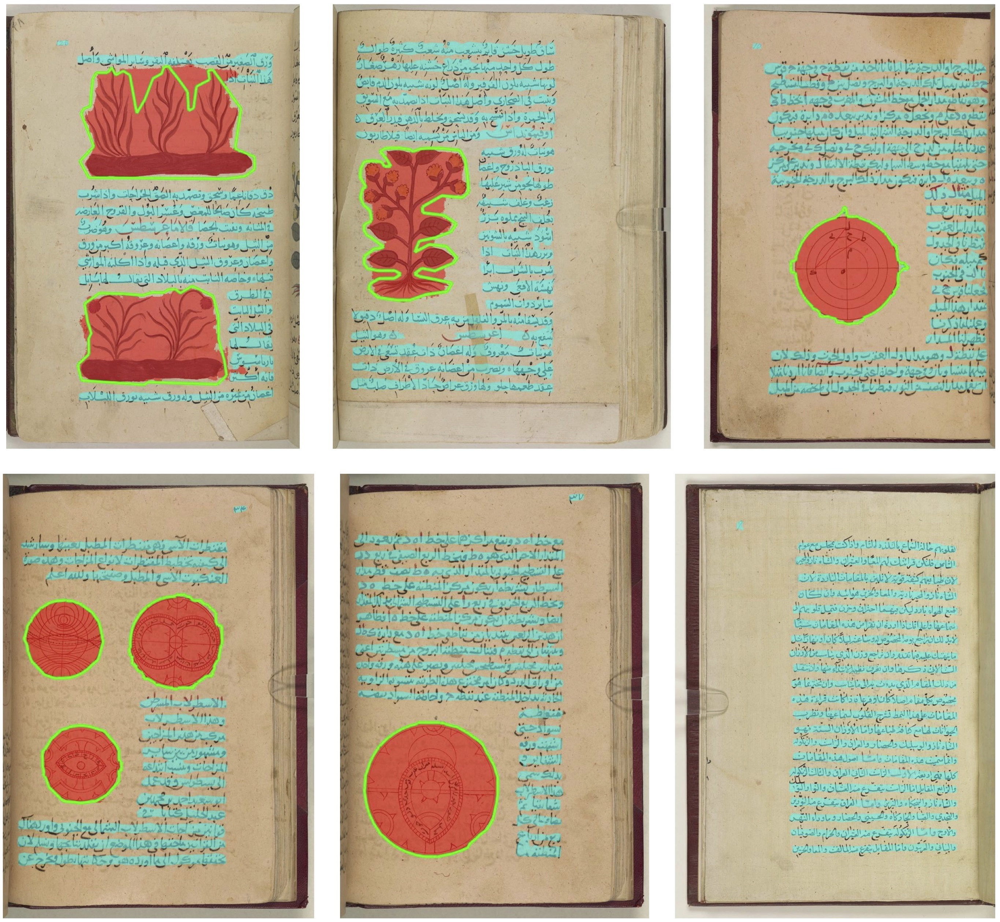

Abstract
We present docExtractor, a generic approach for extracting visual elements such as text lines or illustrations from historical documents without requiring any real data annotation. We demonstrate it provides high-quality performances as an off-the-shelf system across a wide variety of datasets and leads to results on par with state-of-the-art when fine-tuned. We argue that the performance obtained without fine-tuning on a specific dataset is critical for applications, in particular in digital humanities, and that the line-level page segmentation we address is the most relevant for a general purpose element extraction engine. We rely on a fast generator of a rich synthetic document dataset called SynDoc and design a fully convolutional network, which we show to generalize better than a detection-based approach. Furthermore, we introduce a new public dataset dubbed IlluHisDoc dedicated to the fine evaluation of illustration segmentation in historical documents.
Online demo
Check out our web application at https://enherit.paris.inria.fr/ for a live demo! We recommend using Google Chrome for a better user experience. The application was developed in collaboration with Pierre-Guillaume Raverdy from Inria and was supported in part by ENPC and Ecole Nationale des Chartes.
Video
Method
SynDoc
Segmentation network

Results
cBAD2017 - Simple and Complex
cBAD2019

IlluHisDoc (new)
Mandragore
RASM2019
Resources


BibTeX
If you find this work useful for your research, please cite:
@inproceedings{monnier2020docExtractor,
title={{docExtractor: An off-the-shelf historical document element extraction}},
author={Monnier, Tom and Aubry, Mathieu},
booktitle={ICFHR},
year={2020},
}
Acknowledgments
This work was supported in part by ANR project EnHerit ANR-17-CE23-0008, project Rapid Tabasco and gifts from Adobe. We thank Beatrice Joyeux-Prunel, K. Bender, Joanna Fronska, Matthieu Husson, Stavros Lazaris, Galla Topalian, Claudia Rabel, Jean-Philippe Moreux and Alexandre Turc for their help in the data collection and fruitful discussions. We also thank François Darmon, Pierre-Guillaume Raverdy, Tristan Dot and Ryad Kaoua for code testing and feedbacks.